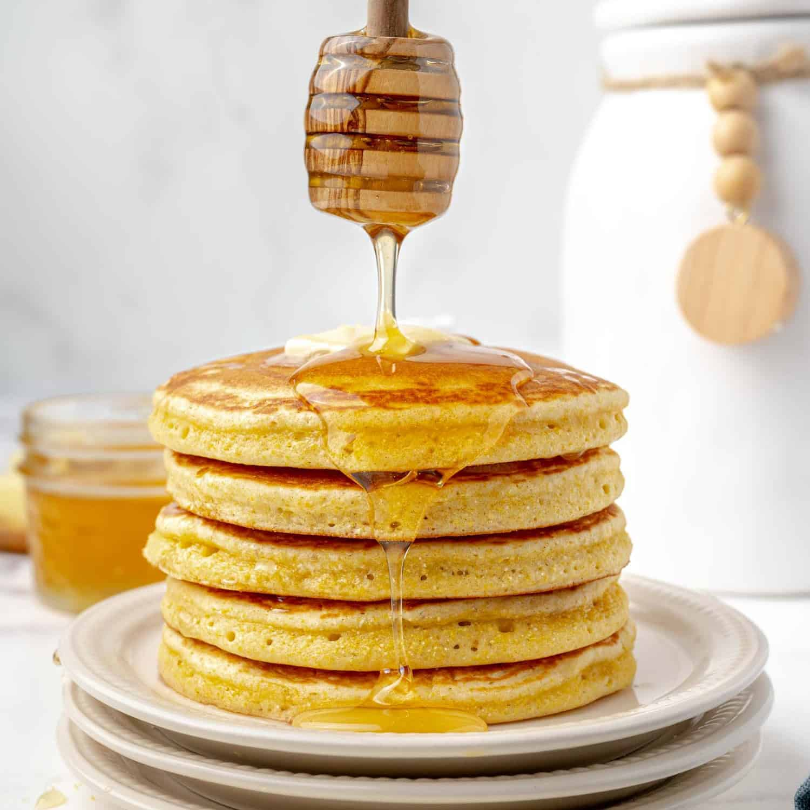

<<<<<<< HEAD
Resep Pancake Madu
Resep Pancake Madu
Dibuat oleh: Faiz Mubarak

Pancake madu adalah salah satu hidangan sarapan yang paling dicintai, dengan sejarah panjang yang berawal dari peradaban kuno. Jejak pancake modern bisa ditelusuri kembali ke masa Yunani dan Romawi kuno, di mana hidangan serupa yang disebut "Alita Dolcia" menjadi favorit. Pancake modern kini telah berevolusi menjadi hidangan yang mudah disiapkan, dan perpaduan klasik antara pancake yang lembut dan empuk dengan siraman madu yang manis alami tetap menjadi pilihan utama untuk memulai hari.
Bahan-Bahan:
- 150 gram tepung terigu serbaguna
- 1 sdm gula pasir
- 1/2 sdt baking powder
- 1/4 sdt soda kue
- 1/4 sdt garam
- 1 butir telur
- 150 ml susu cair
- 2 sdm mentega cair
- 3-4 sdm madu, untuk saus
- Sedikit minyak atau mentega untuk olesan wajan
Cara Membuat:
- Persiapan Bahan Kering: Dalam sebuah mangkuk besar, campurkan tepung terigu serbaguna, gula pasir, baking powder, soda kue, dan garam. Aduk semua bahan kering hingga tercampur rata.
- Persiapan Bahan Basah: Di mangkuk terpisah, kocok telur, susu cair, dan mentega cair hingga semua bahan basah ini tercampur rata.
- Penggabungan Adonan: Tuang campuran bahan basah ke dalam campuran bahan kering. Aduk perlahan dengan menggunakan whisk atau spatula hingga adonan tercampur rata, jangan mengaduknya terlalu lama agar adonan tidak bantat.
- Memasak Pancake: Panaskan wajan anti lengket di atas api sedang. Olesi sedikit minyak atau mentega. Tuang satu sendok sayur adonan, masak hingga muncul gelembung di permukaan dan bagian bawah berwarna keemasan.
- Balik pancake dan masak sebentar hingga matang. Angkat dan letakkan di piring saji. Ulangi hingga adonan habis.
- Sajikan pancake selagi hangat, lalu siramkan madu di atasnya.
Selamat Mencobaa🧑🏼🍳🩷
Sumber Lain